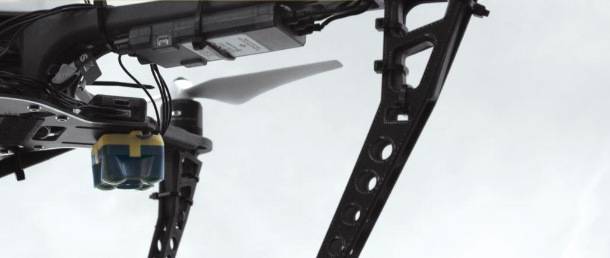

TeraBee TOF RangeFinders¶
The TeraBee EVO family of rangefinders are lightweight distance measurement sensors based on infrared Time-of-Flight (TOF) technology. They are much faster than ultrasound and smaller, lighter and require less power than laser-based lidar but also have a shorter outdoor range.
Note
Specifications are derived from tests in controlled conditions. Bright sunlight, target surface reflectivity and other variables will affect sensor performance. The combination of very bright sunshine and low reflectivity targets (such as grass) can reduce maximum range to 10m or less. For additional information, please find the following <https://terabee.b-cdn.net/wp-content/uploads/2019/04/TeraRanger-Evo-60m-Test-Results-Report-Outdoor.pdf>`__
More technical information about these senors can be found below:
Discontinued:
Evo600Hz
TeraRanger One
Note
These rangefinders are only supported in ArduPilot autopilots via I2C protocol.
Connecting to the TeraRanger EVO via I2C¶
The TeraRanger EVO sensor can be easily connected to the Pixhawk or other ArduPilot with the open-ended cable included with the sensor.
EVO I2C backboard pins |
Pixhawk I2C port pins |
1 Tx |
|
2 Rx |
|
3 GND |
|
4 SDA |
3 SDA |
5 SCL |
2 SCL |
6 |
|
7 VCC |
1 VCC |
8 GND |
4 GND |
9 |
|
Note
Do not power from autopilot port, unless port is known to have sufficient current capability. If this is the case just connect the SCL/SDA lines from the rangefinder to the autopilot’s I2C signals of the same name.
Note
some of these rangefinders consume over 100ma of current and should NOT be powered from the autopliots’s I2C port, but from an external 5V regulated supply source.
Note
For more information please visit this link <https://www.terabee.com/connection-to-pixhawk-autopilots-teraranger-evo/>`__
Setup in Mission Planner¶
To use the TeraRanger EVO sensor as rangefinder, connect with Mission Planner and open the CONFIG/Full Parameter List menu and set:
RNGFNDx_MAX_CM: This parameter sets the maximum distance that the rangefinder is used by the autopilot.RNGFNDx_MIN_CM: This parameter set the minimum distance that the rangefinder is used by the autopilot.RNGFNDx_ADDR: 48 (for TeraRanger One) or 49 (for EVO series), 0 will disable the rangefinder setup.RNGFNDx_TYPE: 14RNGFNDx_ORIENT: 25 (for downward facing). If used for Object Avoidance or ceiling distancing, instead of altitude ranging, mount and chose the appropriate orientatioin.
Values for the rangefinders are shown below:
EVO60M |
EVO40M |
EVO15M |
EVO3M |
EVOMini |
EVO600Hz |
Terranger One |
|
RNGFNDx_MAX_CM |
6000 |
4000 |
1500 |
300 |
330 |
800 |
1400 |
RNGFNDx_MIN_CM |
50 |
50 |
50 |
50 |
3 |
75 |
20 |
RNGFNDx_ADDR |
49 |
49 |
49 |
49 |
49 |
49 |
48 |
Power Required |
5V/330ma |
5V/330ma |
5V/330ma |
5V/330ma |
5V/50ma |
5V/190ma |
10-20V/120ma |
Notes |
1 |
1 |
1 |
1 |
1 |
2 |
|
Do not power from autopilot port, unless port is known to have sufficient current capability.
Requires 3.3V to 5V level shifting to connect to autopilots I2C signals
{kind=link}
MissionPlanner Setup for using TeraRanger One sensor on autopilot¶
Testing the sensor¶
The distances read by the TeraRanger EVO sensor can be displayed on the Mission Planner Flight Data menu. The Status button the left will show status values. Then choose “sonarrange”.
{kind=link}
Mission Planner: Setting to display rangefinder data on the Flight Datascreen¶
Warning
When the autopilot boots, the rangefinder needs to already be powered on, or at least be powered on at the same time as the autopilot. If you power the rangefinder after the autopilots has booted, it will not be recognized since the autopilot will have already scanned its I2C bus for devices!